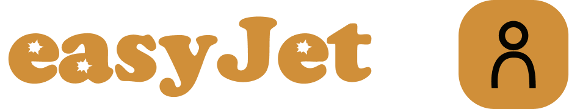
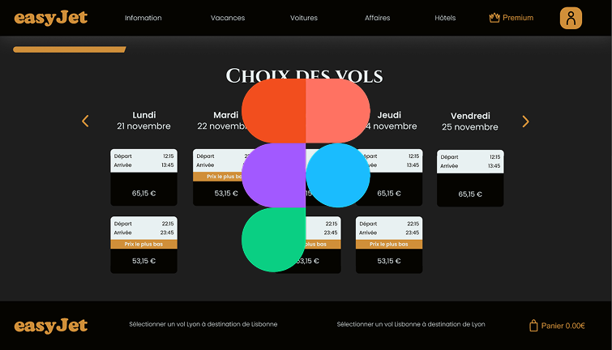
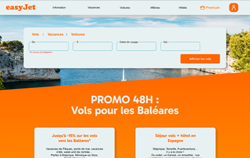
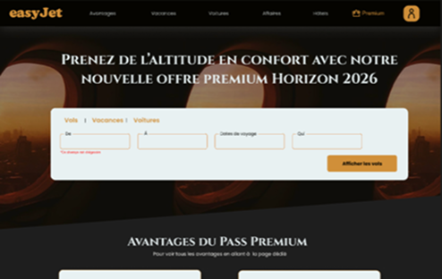
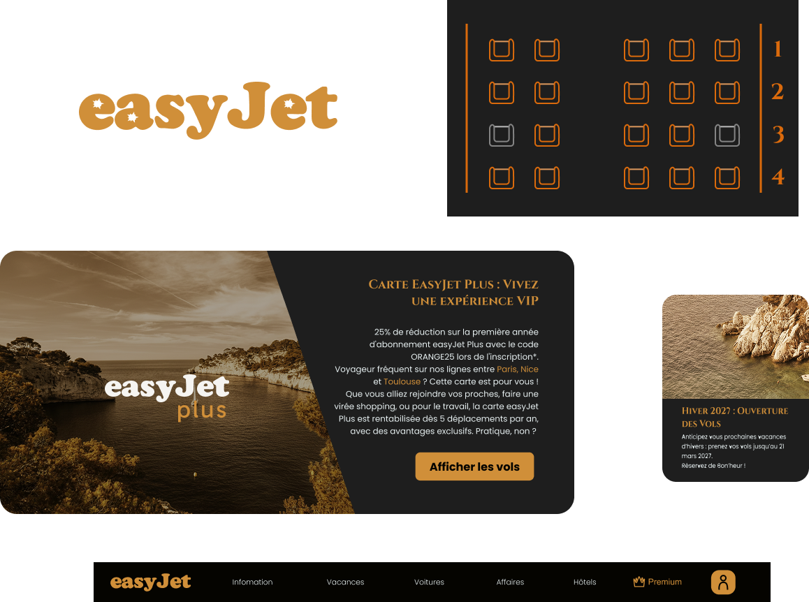

Ce projet a été réalisé dans le cadre de projet de spécialité à MyDigitalSchool. L’objectif était d’imaginer une évolution du site EasyJet à l’horizon 2026 en proposant une nouvelle offre Premium, tout en conservant l’identité low-cost de la marque. Le travail consistait à créer une expérience utilisateur différenciée entre une offre low-cost et une offre premium, avec une direction artistique et une interface adaptées à chaque segment.

Objectif : Concevoir une expérience Premium pour EasyJet permettant de se différencier de l’offre low-cost actuelle, plus moderne et plus immersive, tout en facilitant le processus de réservation.
Missions :
- Analyse UI du site existant d’EasyJet
- Conception d’un design system
- Création de moodboards Low-cost et Premium
- Conception de l’arborescence du site
- Réalisation des maquettes
- Conception d’un tunnel de réservation optimisé
Le projet consistait à concevoir deux versions de l’interface EasyJet : une version low-cost repensée et une version Premium. L’objectif était de créer un contraste visuel clair entre ces deux expériences tout en conservant une cohérence globale dans l’interface.
Après l’analyse du site actuel, plusieurs points d’amélioration ont été identifiés : une interface très chargée visuellement, une présence dominante de la couleur orange et une hiérarchie des éléments parfois difficile à lire. L’objectif était donc de simplifier l’interface et d’améliorer la lisibilité.
J’ai ensuite travaillé sur deux directions visuelles distinctes. La version low-cost conserve l’identité d’EasyJet mais avec une interface plus épurée et des éléments modernisés. La version Premium adopte une direction artistique plus élégante avec une palette de couleurs composée de noir, bronze et nuances dorées.

Voir maquettes
Enfin, j’ai développé un design system et plusieurs interfaces clés, dont la page d’accueil et le tunnel de réservation. Une version mobile du tunnel a également été réalisée afin d’adapter l’expérience aux usages sur smartphone.
Conclusion
Ce projet m’a permis de travailler sur la création d’une direction artistique UI, la mise en place d’un design system et la conception d’interfaces cohérentes entre desktop et mobile.

Low Cost
Une interface très marquée par l’univers low-cost, avec une forte présence de la couleur orange, une densité d’informations importante et une hiérarchie visuelle parfois difficile à lire.

Premium
Une interface Premium plus épurée et plus élégante, avec une direction artistique contrastée, une hiérarchie visuelle plus claire et une expérience de réservation plus fluide.


Me contacter